מזמור לתודה
עשרות מנגינות למזמור לתודה, דיסקים, מגנטים, קרבן תודה, סיפורים ומאמרים על המזמור
76 פריטים
מנגינות למזמור לתודה (54)
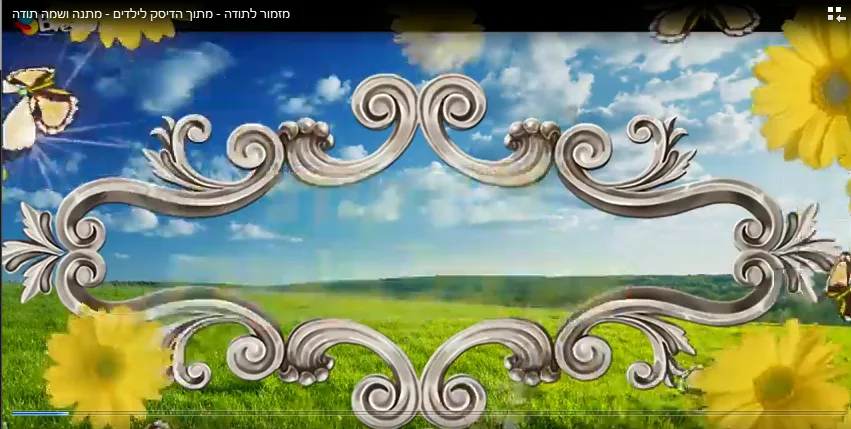
שירי מזמור לתודה לצפיה
הרב ארוש שר מזמור לתודה שמח מאוד מתאים גם לילדים קרא עוד
הרב ארוש שר מזמור לתודה
שמח מאוד מתאים גם לילדים מזמור לתודה מהרב שלום ארוש - שמח מאוד לחץ כאן לצפיה הרב ארוש שר מזמור לתודה - למבוגרי…
🎵 לרשימת ההשמעה המלאה – 52 מנגינות ←
דיסקים (4)

דיסקים
דיסק שירי מזמור לתודה עשרה ניגונים על מזמור לתודה (חסידי, ספרדי, ליטאי, ועוד). ארבעה שיעורים נפלאים לבאר את מש…
דיסק שירי מזמור לתודה
עשרה ניגונים על מזמור לתודה (חסידי, ספרדי, ליטאי, ועוד). ארבעה שיעורים נפלאים לבאר את משמעות מזמור לתודה... קב…
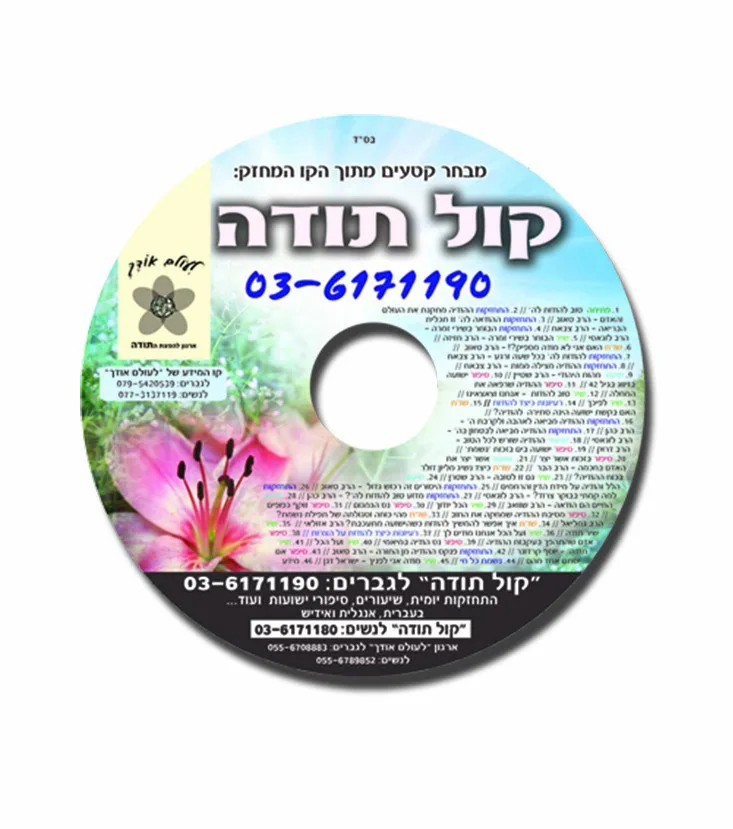
דיסק קול תודה
מבחר קטעים נפלאים מתוך הקו המחזק בקו קול תודה (03-6171190) יש ב"ה כמות גדולה מאוד של שיעורים סיפורים ושירים בד…
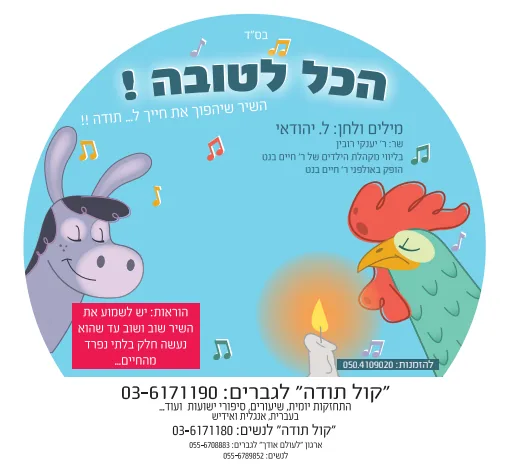
דיסק הכול לטובה
השיר שיהפוך את חייכם ל... תודה שיר נפלא על סיפורו של ר' עקיבא ונחום איש גם זו ניתן לשמוע את השיר בטלפון: 03-61…
מגנטים (7)
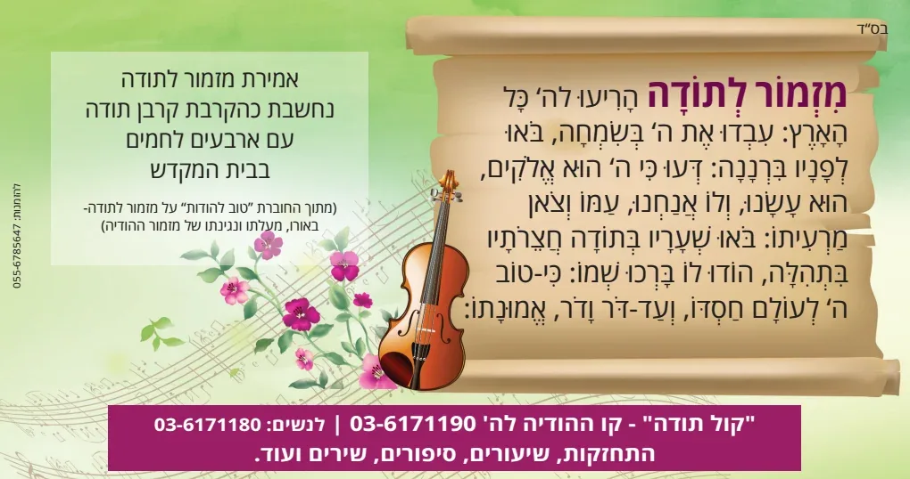
מגנטים – מזמור לתודה
מגנטים - מזמור לתודה מגנט מספר 1 - קרבן תודה אמירת מזמור לתודה - כהקרבת קרבן תודה קרא עוד מגנט מס' 2 - מחולק ל…
מגנט מזמור לתודה - ששה סוגים
מגנטים - מזמור לתודה מגנט מספר 1 - קרבן תודה מגנט מספר 1 - קרבן תודה אמירת מזמור לתודה - כהקרבת קרבן תודה מגנט…
מגנט מזמור לתודה
מגנטים - מזמור לתודה מגנט מס' 2 - מחולק לי"ג חלקים מגנט מס' 2 - מחולק לי"ג חלקים מומלץ לרוצים להבין את המזמור …
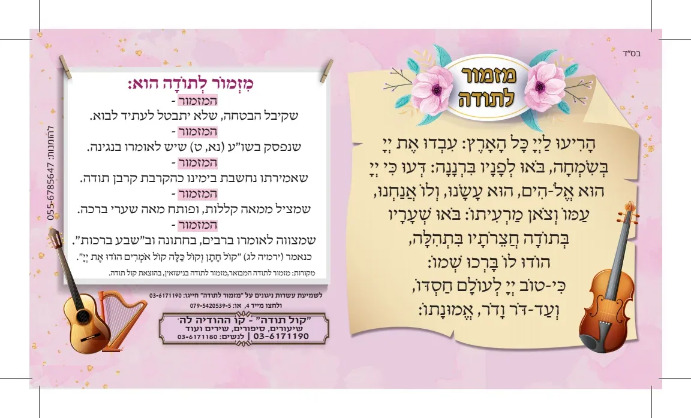
מגנט מספר 3 - חמשת המעלות של המזמור
לעורר את הרבים על מעלת המזמור - קלאסי לכל אירוע מגנט נפלא - המתאר את המעלות המיוחדות שיש במזמור לתודה מתאים לכ…
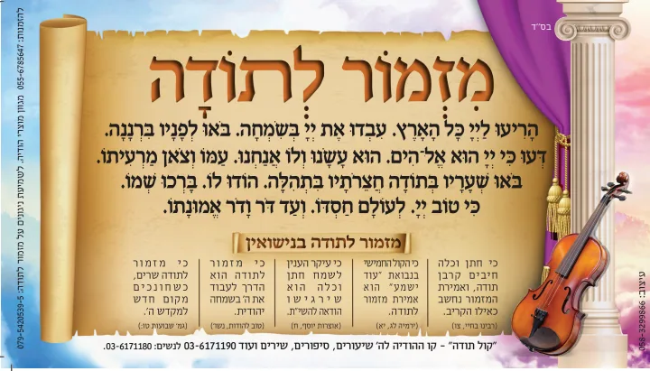
מגנט מס' 4 – לחתונה
מגנטים - מזמור לתודה מגנט מס' 4 - לחתונה מגנט מס' 4 - לחתונה עם המעלות הנפלאות שיש לומר מזמור לתודה בחתונה מתא…
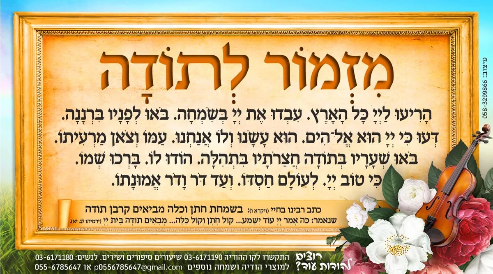
מגנט מספר 6 - לנישואין
חתן וכלה חיבים בקרבן תודה מגנט גדול ויפה עם מזמור לתודה מאיר עינים ובסופו פתגם של הודיה לחתונה מומלץ מאוד לשבע…
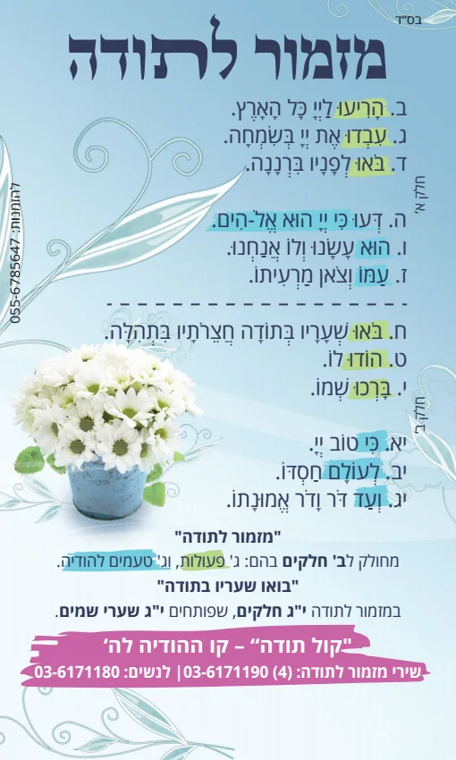
מגנטים על מזמור לתודה
ארבעה מגנטים צבעונים גדולים ויפים מגנטים נפלאים למזמור לתודה מגנט מזמור לתודה קלאסי מגנט מזמור לתודה מחלוק לפי…
מאמרים, חוברות וסיפורים על המזמור (7)

מזמור לתודה – מבוא
מזמור לתודה דיסק שירי מזמור לתודה עשרה ניגונים על מזמור לתודה (חסידי, ספרדי, ליטאי, ועוד). ארבעה שיעורים נפלאי…
עלוני קול תודה על מזמור לתודה
בדף זה תוכל למצוא מאמרים נפלאים על מזמור לתודה מזמור לתודה פותח מאה שערי ברכה הורד קובץ PDF • 691KB מזמור לתוד…
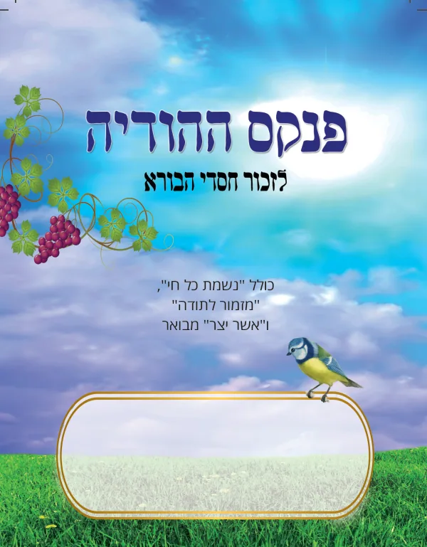
מאמרים על מזמור לתודה
ניתן להוריד את כל הסיפורים למחשב מקובץ בסוף המאמרים סיפור א' - בזכות פנקס ההודיה סיפור ב' - בזכות שירת מזמור ל…
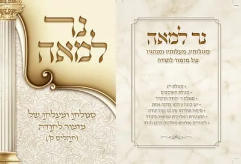
סיפורי מזמור לתודה - מאמרים והרצאות
מכתב מרגש שכתב יהודי: בדורנו התגלה מפתח – מסטר חדש ומוצלח מאין כמותו. מפתח זה פותח את כל הדלתות ממש. ראשית (או…
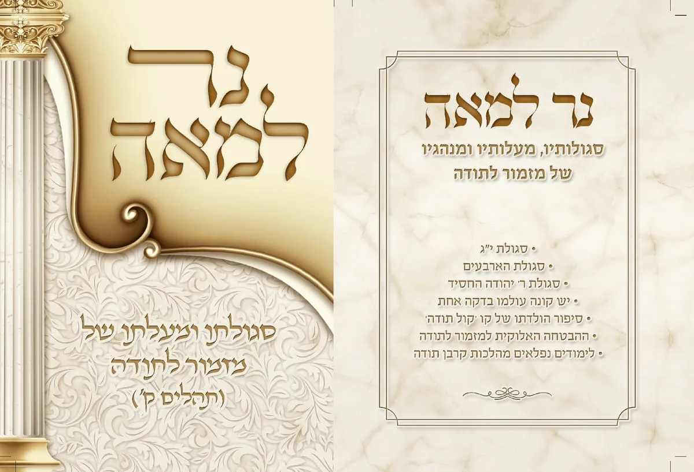
נר למאה - סגולתו ומעלתו של מזמור לתודה
הדרכים כיצד לגרום למזמור לתודה - להביא את הישועה. בחוברת המון עדויות שנשלחו אלינו מאנשים פשוטים שאמרו את 'מזמו…
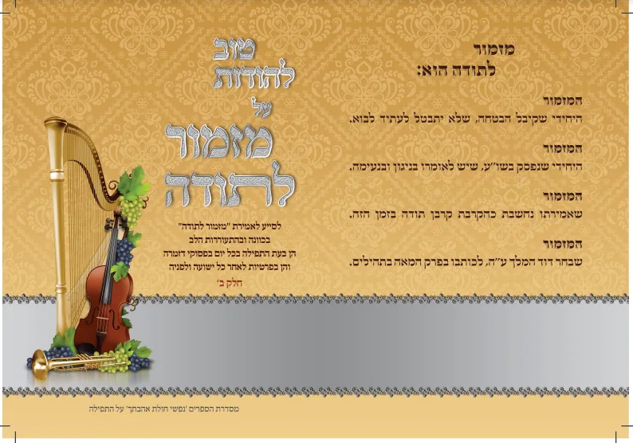
טוב להודות על מזמור לתודה
מעלתו, סגולתו ופירושו של מזמור לתודה. מאת הרב שלום אליעזר הרבסט שליט''א לחץ כאן לעיון בחוברת טוב להודות על מזמ…

מזמור לתודה - חכמי ישראל
ביאורם של חכמי ישראל על מזמור לתודה כולל סיפורים וורטים מזמור לתודה עם הערות וביאורים מחכמי ישראל החיי אדם החת…
קרבן תודה (4)

קרבן תודה
המחשה מרתקת סדר הקרבת קרבן תודה עם ארבעים לחמים מכון תורת הקרבנות קרא עוד נר למאה - קרבן תודה טעמים נפלאים בהל…
צילום וידאו - סדר הקרבת קרבן תודה
המחשה מרתקת סדר הקרבת קרבן תודה עם ארבעים לחמים מכון תורת הקרבנות דיסק און קי למחשב הכולל 2 מתנות מתנה ראשונה …
נר למאה - קרבן תודה
טעמים נפלאים בהלכות קרבן תודה. . מה עומד מאחורי ההלכות של קרבן תודה? מדוע לא מספיק להודות, למה צריך קרבן? מי ח…
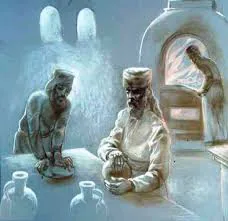
הלכות קרבן תודה וסדר ההקרבה
כולל סדר אמירת קרבן תודה לחיי אדם עם הערות ובאורים אדם שקרה לו נס היה מביא קרבן תודה בזמן המקדש. גם היום ראוי …